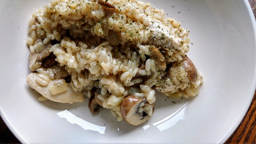

One-pot chicken & mushroom risotto
Risotto is the ultimate one-pot winter supper – the perfect vehicle for letting simple, comforting ingredients shine. Scatter on cheese and parsley to serve.
Ingredients
- 60 g butter
- 1 large onion, finely chopped
- 2 thyme sprigs, leaves picked
- 250 g pack chestnut mushrooms, sliced
- 300 g risotto rice
- 1.5 l hot chicken stock
- 200 g cooked chicken, chopped into chunks
- 50 g grated parmesan, plus extra to serve (optional)
- small pack parsley, finely chopped
Instructions
- Heat the butter in a large pan over a gentle heat and add the onion. Cook for 10 mins until softened, then stir in the thyme leaves and mushrooms. Cook for 5 mins, sprinkle in the rice and stir to coat in the mixture.
- Ladle in a quarter of the stock and continue cooking, stirring occasionally and topping up with more stock as it absorbs (you may not need all the stock).
- When most of the stock has been absorbed and the rice is nearly cooked, add the chicken and stir to warm through. Season well and stir in the parmesan and parsley. Serve scattered with extra parmesan, if you like.
Source
www.bbcgoodfood.comShort URL Long URL